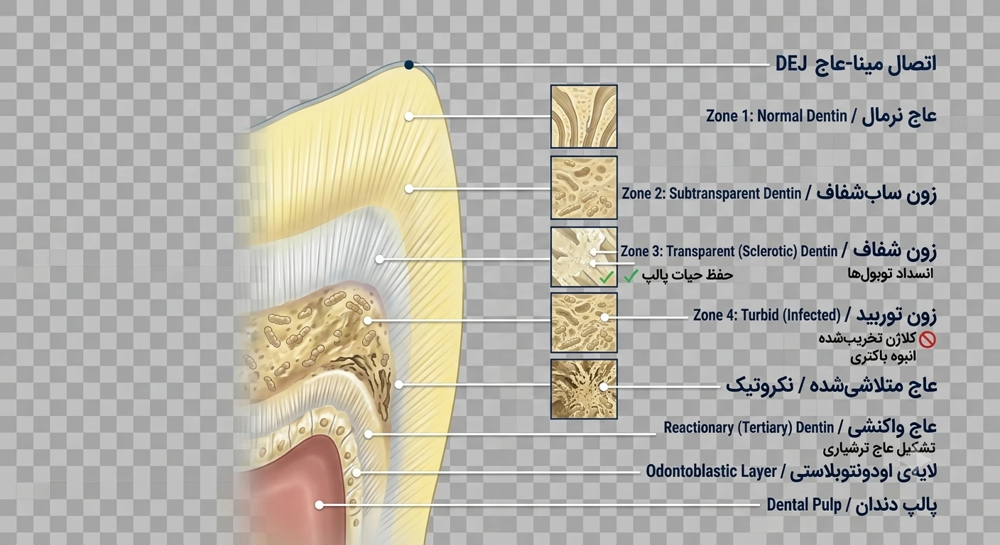

نسخه استخراجشده؛ ترجمه یا تأیید علمی انجام نشده است. وضعیت: captured
قدم 1 · theory
زونهای ۵گانه عاج و خطوط دفاعی

این تصویر ترتیب دقیق ۵ زون عاج را از حفره به پالپ (Normal, Subtransparent, Transparent/Sclerotic, Turbid/Infected, Decomposed) و تشکیل عاج ترشیاری را در مرز پالپ نشان میدهد.
قدم 2 · question
در برداشت پوسیدگی، بخشی از عاج سفت هنوز با رنگ آشکارساز پوسیدگی رنگ میگیرد. کدام تفسیر درستتر است؟
۰۱
Normal Dentin
۰۲
Infected Dentin
۰۳
رنگگیری بهتنهایی وجود عاج عفونیِ نیازمند برداشت را ثابت نمیکند؛ قوام، عمق و طرح درمان نیز باید بررسی شوند
۰۴
Decomposed Dentin
قدم 3 · question
توبولهای عاجی که خالی از زوائد اودونتوبلاستی بوده و به دلیل حبس هوا در نور عبوری میکروسکوپ سیاه به نظر میرسند، چه نام دارند؟
۰۱
Sclerotic Dentin
۰۲
Dead Tracts (مسیرهای مرده)
۰۳
Tertiary Dentin
۰۴
Predentin
قدم 4 · question
عدم وجود حس درد در یک حفره بسیار عمیق دندانی، حتی هنگام لمس مستقیم عاج، نشانه قطعی حیات و سلامت کامل پالپ است.
۰۱
صحیح
۰۲
غلط
قدم 5 · question
در برداشت انتخابی پوسیدگی عمیق، نقص سیل ترمیم میتواند خطر ادامهٔ فعالیت ضایعه و شکست درمان را افزایش دهد.
۰۱
صحیح
۰۲
غلط
قدم 6 · question
اصل طراحی فرزهای پلیمری انتخابی برای برداشت عاج پوسیده چیست؟
۰۱
با رنگ زدن باکتریها
۰۲
سختی کنترلشدهٔ پلیمر برای برداشت ترجیحی عاج نرمتر و کاهش برداشت عاج سختتر
۰۳
با افزایش pH دهان
۰۴
با عصبکشی سریع دندان
قدم 7 · question
عاج ترشیاری که در پاسخ به محرکهای ملایم و توسط اودونتوبلاستهای اصلی ساخته میشود، چه نام دارد؟
۰۱
Reactionary Dentin
۰۲
Reparative Dentin
۰۳
Sclerotic Dentin
۰۴
Primary Dentin
قدم 8 · question
در عاج متلاشیشده (Decomposed dentin)، سازمان توبولها و شبکهٔ کلاژن کاملاً سالم مانده و فقط بخشی از مواد معدنی از دست رفته است.
۰۱
صحیح
۰۲
غلط
قدم 9 · question
زون شفاف (Transparent Zone) در هایستوپاتولوژی پوسیدگی عاج، حاصل کدام فرآیند بیولوژیک در توبولهای عاجی است؟
۰۱
نفوذ انبوه باکتریها به داخل توبولها
۰۲
رسوب کریستالهای املاح و مسدود شدن توبولها (اسکلروز)